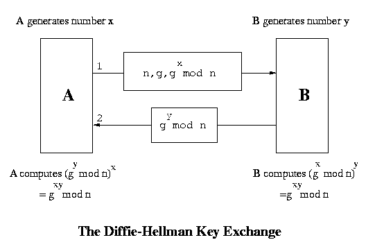
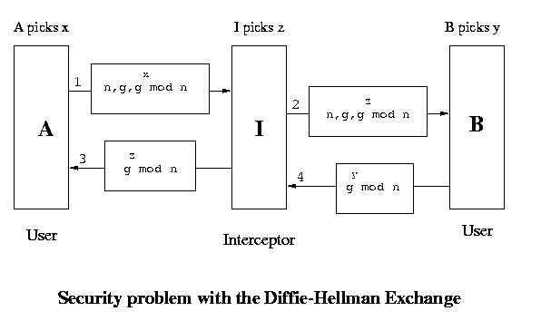
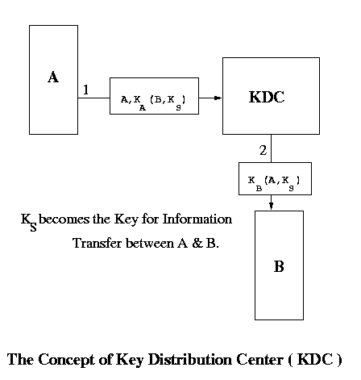

Key exchange in symmetric key schemes is a tricky business because anyone snooping on the exchange can get hold of the key if we are not careful and since there is no public-private key arrangement here, he can obtain full control over the communication. There are various approaches to the foolproof exchange of keys in these schemes. We look at one approach which is as follows:-
A and B are two persons wishing to communicate. Both of them generate a random number each, say x and y respectively. There is a function f which has no inverse. Now A sends f(x) to B and B sends f(y) to A. So now A knows x and f(y) and B knows y and f(x). There is another function g such that g(x, f(y)) = g(y, f(x)). The key used by A is g(x, f(y)) and that used by B is g(y, f(x)). Both are actually same. The implementation of this approach is described below :

However there is a security problem even then. Though this system cannot be broken but it can be bypassed. The situation which we are referring to is called the man-in-the-middle attack. We assume that there is a guy C in between A and B. C has the ability to capture packets and create new packets. When A sends n, g and gx mod n, C captures them and sends n, g and gz mod n to B. On receiving this B sends n, g and gy mod n but again C captures these and sends n, g and gz mod n to A. So A will use the key (gz mod n)x and B will use the key (gz mod n)y . Both these keys are known to C and so when a packet comes from A, C decrypts it using A's key and encrypts it in it's own key and then sends it to B. Again when a packet comes from B, it does a similar thing before sending the packet to A. So effectively there are two keys - one operating between A and C and the other between C and B.

There must be some solution to this problem. The solution can be such so that we may not be able to communicate further ( because our keys are different ) but atleast we can prevent C from looking at the data. We have to do something so that C cannot encrypt or decrypt the data. We use a policy that A only sends half a packet at a time. C cannot decrypt half a packet and so it is stuck. A sends the other half only when it receives a half-packet from B. C has two options when it receives half a packet :There is another much simpler method of exchanging keys which we now discuss :

When A wants to communicate with B, it sends a message encrypted in it's key to the KDC. The KDC then sends a common key to both A and B encrypted in their respective keys. A and B can communicate safely using this key. There is a problem with this implementation also. It is prone to replay attack. The messages are in encrypted form and hence would not make sense to an intruder but they may be replayed to the listener again and again with the listener believing that the messages are from the correct source. To prevent this, we can use: